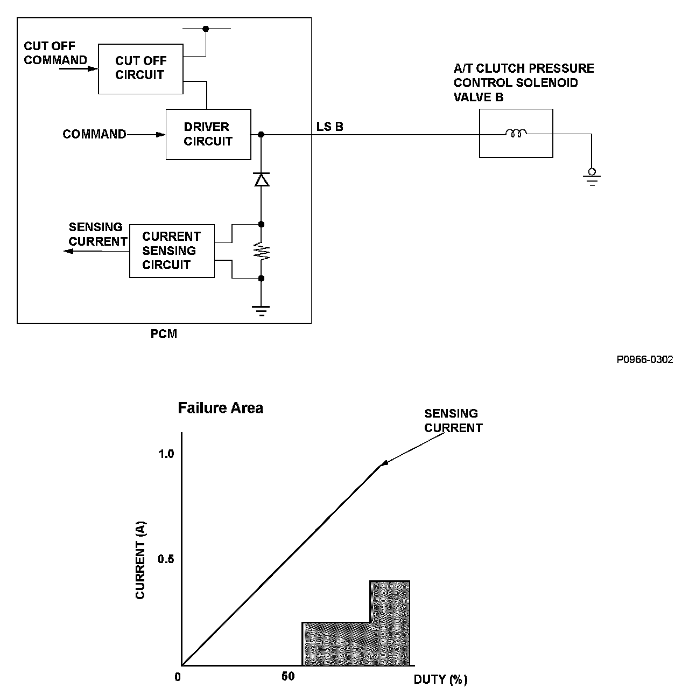
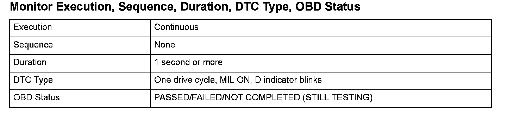
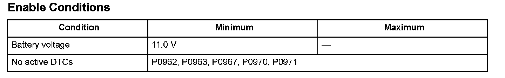
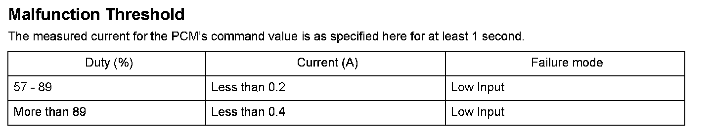

Advanced Diagnostics
DTC P0966: Problem in A/T Clutch Pressure Control Solenoid Valve B Circuit
General Description
A/T clutch pressure control solenoid valve B is used for clutch pressure control. A spool in A/T clutch pressure control solenoid valve B pushes a valve according to the duty cycle that is controlled by the powertrain control module (PCM) so the hydraulic pressure is proportional to the current. The PCM measures the current flowing through A/T clutch pressure control solenoid valve B and uses feedback control to compensate for the difference between the actual current and the commanded one. If the measured current for the PCM output duty cycle is not within a specified range (open or short), a malfunction is detected and a DTC is stored.

Monitor Execution, Sequence, Duration, DTC Type, OBD Status

Enable Conditions

Malfunction Threshold
Driving Pattern
Start the engine, and wait for at least 1 second.
Diagnosis Details
Conditions for illuminating the MIL
When a malfunction is detected, the MIL comes on and the DTC and the freeze frame data are stored in the PCM memory.
Conditions for clearing the MIL
The MIL will be cleared if the malfunction does not recur during three consecutive trips in which the diagnostic runs.
The MIL, the DTC, and the freeze frame data can be cleared by using the scan tool Clear command or by disconnecting the battery.